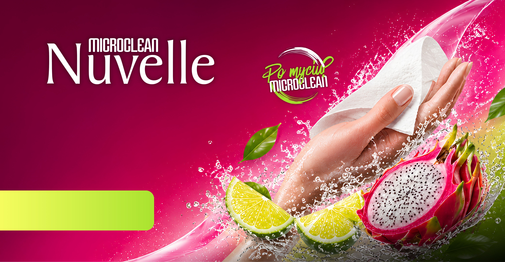
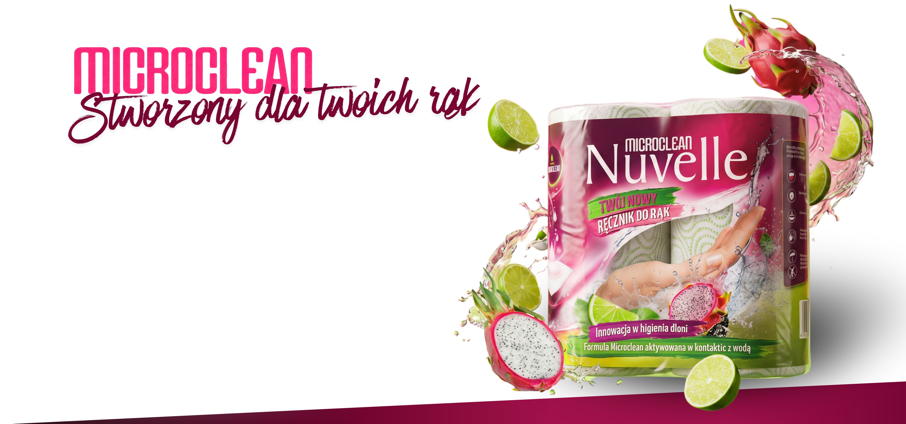
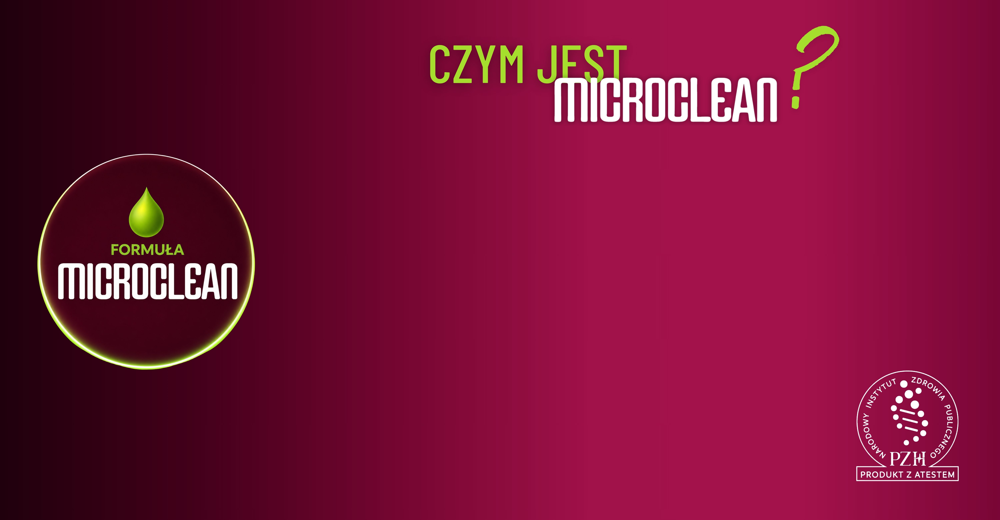
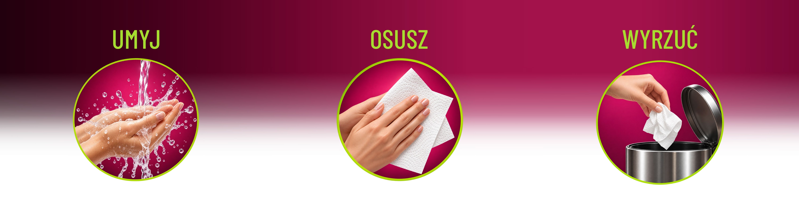
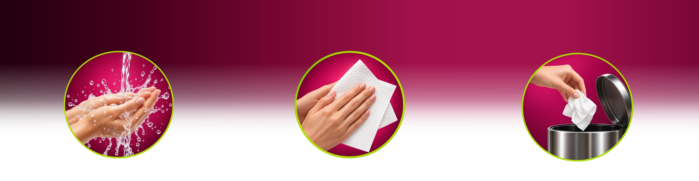
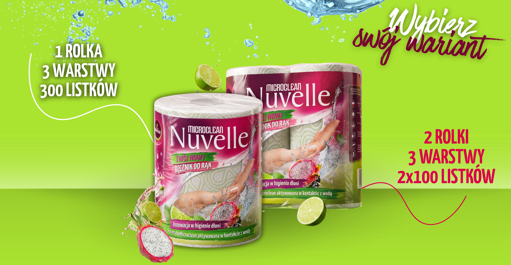
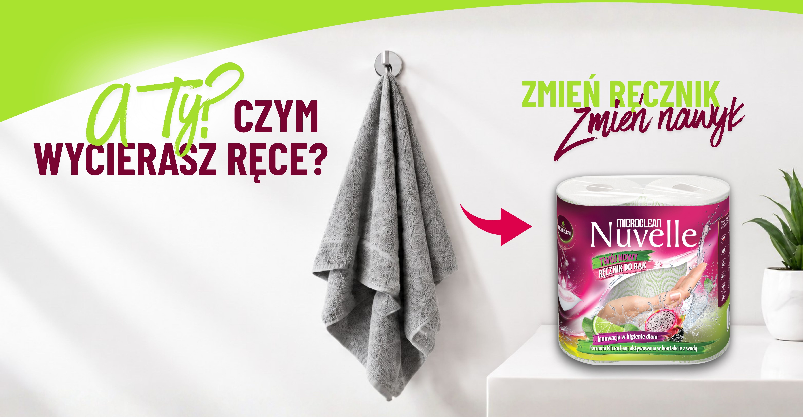

Poznaj Microclean - funkcjonalny ręcznik stworzony z myślą o codziennej higienie i osuszaniu dłoni.
Zastąp klasyczny ręcznik bawełniany i poznaj nowy sposób osuszania rąk po każdym myciu.
Zapach limonki
i tropikalnych owoców

Ręczniki Nuvelle Microclean to absolutna
nowość na polskim rynku.
Są pierwszymi suchymi ręcznikami celulozowymi o dodatkowym działaniu przeciwdrobnoustrojowym.

Poznaj różnicę między zwykłym ręcznikiem papierowym, a ręcznikiem Microclean.
Produkty z linii Nuvelle Microclean wzbogacone są w bezpieczny i biodegradowalny dodatek Microclean, którego skuteczność została potwierdzona w akredytowanych laboratoriach badawczych.
Microclean łączy w sobie dwie funkcje – doskonale osusza dłonie i dodatkowo, dzięki innowacyjnemu dodatkowi Microclean, bezpiecznie higienizuje dłonie (skutecznie ogranicza na nich rozwój drobnoustrojów). Tym samym dodatkowa ochrona wprowadzana jest przy okazji rutynowej czynności - komfortowo i bez konieczności pamiętania o niej.
Produkt posiada atest PZH.


Opatentowana
formuła Microclean
Dodatek aktywowany w kontakcie z wodą
Stworzony
do rąk
Przeznaczony do codziennej higieny dłoni
Osusza
i higienizuje
Łączy chłonność ręcznika z dodatkowym wsparciem higieny dłoni
Bezpieczny
dla skóry
Miękki, chłonny i wygodny w użyciu


Dla większości z nas odpowiedź jest prosta: ręcznikiem bawełnianym.
Ale codzienny nawyk można zmienić!
Poznaj Microclean
Twój nowy ręcznik do rąk
Skontaktuj się z nami!
Masz pytania? Chętnie pomożemy!
kontrolajakosci@epicom.com.pl